Inspiring Examples
Prior information to exploit: there are only a few active parameters (sparse!), the exact number of which is unknown.
Example 1: Compressive Sensing
| 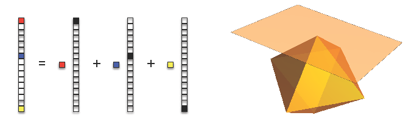 |
{kind=link}
In compressive sensing, a sparse signal is simple: it is a parsimonious sum of the canonical basis vectors 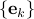
These basis vectors are building blocks for sparse signals.
The 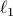 norm enforces sparsity w.r.t. the canonical basis vectors.
The unit norm ball is conv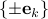 the convex hull of the basis vectors.
A hyperplane will most likely touch the norm ball at spiky points, which correspond to sparse solutions.
This is the geometrical reason that minimize 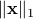 subject to 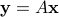 will produce a sparse solution.
Example 2: Low Rank Matrix Recovery
| 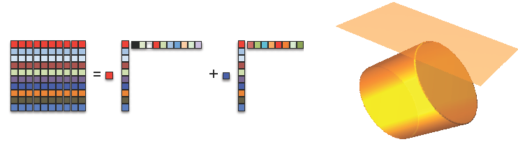 |
A low rank matrix has a sparse representation in terms of unit-norm, rank-one matrices.
The dictionary
 is continuously
parameterized and has infinite number of primitive signals.
is continuously
parameterized and has infinite number of primitive signals.We enforce low-rankness using the nuclear norm:
The nuclear norm ball is the convex hull of unit-norm, rank-one matrices.
A hyperplane touches the nuclear norm ball at low-rank solutions.
Example 3: Line Spectral Estimation
| 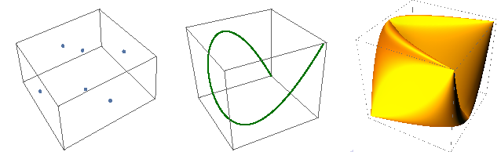 |
{kind=link}
The atoms are trigonometric moment curves 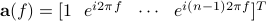 continuously parameterized by 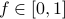
We enforce spectral sparseness using the atomic norm induced by those trigonometric moment curves 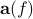:
This atomic norm ball is the convex hull of trigonometric moment curves .
A hyperplane touches the atomic norm ball at sparse line spectral signals.
Example 4: Low Rank Tensor Decomposition
| 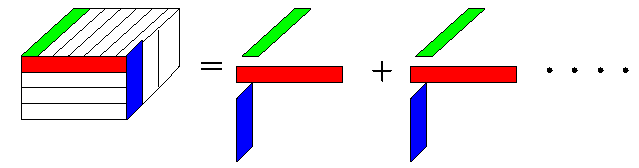 |
{kind=link}
The atoms are unit-norm rank-one tensors 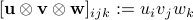 continuously parameterized by 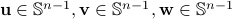.
We enforce low-rankness using the tensor nuclear norm induced by those unit-norm rank-one tensors:
The tensor nuclear norm ball is the convex hull of unit-norm rank-one tensors.
A hyperplane touches the tensor nuclear norm ball at low rank tensors.
General Atomic Norm
Definition of Atomic Norm
Consider a dictionary or set of atoms 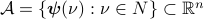 or 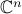.
The parameter space 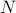 can be finite, countably infinite, or continuous.
The atoms 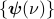 are building blocks for signal representation.
Examples: canonical basis vectors, rank-one matrices, rank-one tensors, trigonometric moment curves, a finite dictionary…
Prior information: the signal is simple w.r.t. 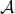, i.e., it has a parsimonious decomposition using atoms in : 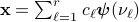
The atomic norm of any 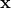 is defined as (Chandrasekaran, Recht, Parrilo, & Willsky, 2010)
The unit ball of the atomic norm is the convex hull of the atomic set
| 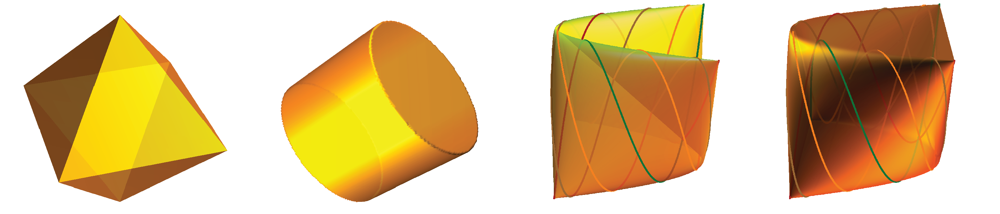 |
{kind=link}
Definition of Dual Atomic Norm
The dual atomic norm is defined as
Example: for line spectral atoms, the dual atomic norm is the maximal magnitude of a complex trigonometric polynomial
View Atomic Norm Minimization as Measure Optimization
Rewrite the decomposition as 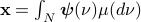
Here 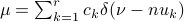 is a discret signed measure defined on the parameter space .
The atomic norm 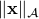 equals the optimal value of an infinite dimensional minimization:
Here 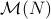 is the set of all measures defined on , and 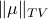 is the total variation norm of a measure.
When 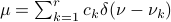 is a discret measure, 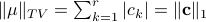.
When
 has a density function 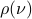, 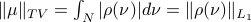
has a density function 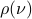, 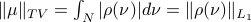
The equivalent measure optimization definition allows us to apply optimization theory and convex analysis to study atomic norm problems.
Popular Atomic Norm Problems
Atomic decomposition: Given a signal, which decompositions achieve the atomic norm?
Recovery from noise-free linear measurements: How many measurements do we need to recover simple signal?
Denoising: How well can we denoise a signal by exploiting its simplicity structure?
Support recovery: How well can we approximately recover the active parameters from noisy data?
Resolution limit: What's the fundamental limit in resolving active parameters?
Computational methods: How shall we solve atomic norm minimization problems?
Atomic Decomposition
Consider a parameterized set of atoms 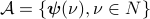 and a signal with decomposition 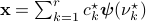 under what conditions on the parameters 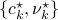, we have 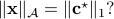
Examples
For 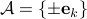, this question is trival.
For 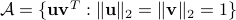, the composing atoms should be orthogonal (Singular Value Decomposition).
For 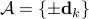, a sufficient condition is that the dictionary matrix 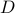 satisfies restricted isometry property.
Optimality condition
Define 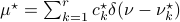. We are asking when 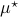 is the optimal solution of
Atomic decomposition studies the parameter estimation ability of total variation minimization in the full-data, noise-free case.
The dual problem:
Optimal condition: is optimal if and only if there exists a dual certificate
 such that
such that
Define a function
 . The optimal condition becomes
. The optimal condition becomes
To ensure the uniqueness of the optimal solution , we strengthen the optimality condition to:
{kind=link}
General Theory
Atomic norm approach, as a new developing tool, has attracted considerable attention in signal processing, machine learning, and statistics. Given a set of atoms, the atomic norm is an abstraction of -type regularization that favors simple models. Using the notion of descent cones, the authors of “The Convex Geometry of Linear Inverse Problems” argued that the atomic norm is the best possible convex proxy for recovering simple models. The paper “The Convex Geometry of Linear Inverse Problems” provides a general framework to convert notions of simplicity into convex penaltu functions, resulting in convex optimization solution to linear inverse problems. |
{kind=link}
The Convex Geometry of Linear Inverse Problems (2010) by Venkat Chandrasekaran, Benjamin Recht, Pablo A. Parrilo, Alan S. Willsky
Computational Methods
Forward - Backward Greedy Algorithms for Atomic Norm Regularization (2015) by Nikhil Rao, Parikshit Shah, Stephen Wright
Interior-point method for nuclear norm approximation with application to system identification (2009) by Zhang Liu and Lieven Vandenberghe
Line Spectral Signals/Sparse Spikes
{kind=link}
Decomposition
Super-Resolution of Complex Exponentials from Modulations with Unknown Waveforms (2016) by Dehui Yang, Gongguo Tang, Michael B. Wakin
Towards a mathematical theory of super-resolution (2012) by Emmanuel Candes, Carlos Fernandez-Granda
Superresolution without Separation (2015) by Geoffrey Schiebinger, Elina Robeva and Benjamin Recht
Super-Resolution of Point Sources via Convex Programming (2015) by Carlos Fernandez-Granda
Denoising/Completion
On gridless sparse methods for line spectral estimation from complete and incomplete data (2015) by Zai Yang, Lihua Xie
Exact Support Recovery for Sparse Spikes Deconvolution (2012) by Vincent Duval and Gabriel Peyre
Compressed Sensing off the Grid (2012) by Gongguo Tang, Badri Narayan Bhaskar, Parikshit Shah, Benjamin Recht
Compressive Two-Dimensional Harmonic Retrieval via Atomic Norm Minimization (2015) by Yuejie Chi, Yuxin Chen
Atomic norm denoising with applications to line spectral estimation (2012) by Badri Narayan Bhaskar, Gongguo Tang, Benjamin Recht
Off-the-Grid Line Spectrum Denoising and Estimation with Multiple Measurement Vectors (2014) by Yuanxin Li, Yuejie Chi
Robust Line Spectral Estimation (2014) by Gongguo Tang, Parikshit Shah, Badri N. Bhaskar, Benjamin Recht
Near Minimax Line Spectral Estimation (2013) by Gongguo Tang, Badri N. Bhaskar, Benjamin Recht
Robust Recovery of Positive Stream of Pulses (2015) by Tamir Bendory
Sparse Signals
 |
Enhancing sparsity and resolution via reweighted atomic norm minimization (2015) by Zai Yang and Lihua Xie
Low Rank Matrices
{kind=link}
Necessary and Sufficient Conditions for Success of the Nuclear Norm Heuristic for Rank Minimization (2008) by Benjamin Recht, Weiyu Xu, Babak Hassibi
Exact Matrix Completion via Convex Optimization (2008) by Emmanuel J. Candes, Benjamin Recht
Low Rank Tensor
{kind=link}
Guaranteed Tensor Decomposition: A Moment Approach (2015) by Gongguo Tang, Parikshit Shah
Overcomplete Tensor Decomposition via Convex Optimization (2016) by Qiuwei Li, Ashley Prater, Lixin Shen, Gongguo Tang
Mixtures of Translations
Atomic Decomposition of Mixtures of Translation-Invariant Signals (2013) by Gongguo Tang, Benjamin Recht
Robust Recovery of Stream of Pulses using Convex Optimization (2014) by Tamir Bendory, Shai Dekel, Arie Feuer
Radar/DOA
{kind=link}
Super-Resolution MIMO Radar (2016) by Reinhard Heckel
Off-Grid Direction of Arrival Estimation Based on Joint Spatial Sparsity for Distributed Sparse Linear Arrays (2014) by Y Liang, R Ying, Z Lu, P Liu
Grid-free compressive beamforming (2015) by Angeliki Xenaki, Peter Gerstoft
Super-Resolution Radar (2014) by Reinhard Heckel, Veniamin I. Morgenshtern, Mahdi Soltanolkotabi
High Range Resolution Profiling for Stepped-Frequency Radar with Sparse Reconstruction (2010) by Yang Hu, Yimin Liu, Huadong Meng
Spherical Harmonics
 |
Exact recovery of Dirac ensembles from the projection onto spaces of spherical harmonics (2014) by Tamir Bendory, Shai Dekel, Arie Feuer
Linear Systems
 |
Linear System Identification via Atomic Norm Regularization (2012) by Parikshit Shah, Badri Narayan Bhaskar, Gongguo Tang, Benjamin Recht